Investigation of the Potential Benefits of a Health Monitor for Sleep Apnea Sufferers
Examination Number: 123513
| Table of Contents | |
|---|---|
| Meeting The Brief | Page 2 |
| Investigation | Page 3 |
| Plan & Design | Page 4 |
| Create | Page 5 |
| Evaluation | Page 6 |
| References | Page 7 |
Date of Completion: March 18, 2024
1.
1. Meeting the Brief
Fulfilment of Basic Requirements:
Analogue
inputs: Heartbeat and Blood oxygen Data
Digital Outputs: Data displayed on the LCD module, statistics and
wellbeing analysis printed to the console.
This is a sample of my code which validates and stores the data in the list 'data_list':
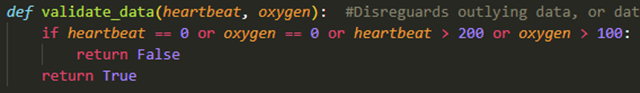
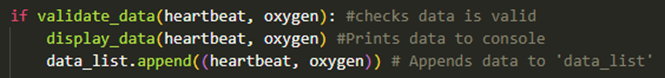
This
is an example output from the python script, which calculates the average of
both heartbeat and blood oxygen readings. It also includes a 'Wellbeing
analysis'. This analysis can be used to inform future decisions relating
to wellbeing.
Fulfilment of Advanced Requirements:
I used Python to create a computer model based on an externally sourced dataset of wellbeing data. This dataset contains multiple descriptive features pertaining to wellbeing, and is capable of answering multiple 'What If' style questions.
'What If' Question 1:
What
if the values under the 'Apnea-Hypopnea Index' variable are changed by 'n'?
What is the estimated change in the values under the variable 'Oxygen
Desaturation Index'?
Validated
Parameters Used:
1.
Obstructive Sleep Apnea Severity. General descriptor of sleep apnea severity.. This
data is in enumerated form, and there are 3 possible options: 'Mild',
'Moderate', and 'Severe' .
2.
Apnea-Hypopnea Index. Quantifies the severity of sleep apnea by counting
the number of apneas and hypopneas during sleep. This data is in float form.
3.
Desaturation Index. The average number of desaturation episodes per hour.
This data is in float form.
How does this question pertain to wellbeing?
"If
your blood has low levels of oxygen, it can't deliver enough oxygen to your
organs and tissues that need it to keep working (hypoxia). This can damage your
heart or brain if it persists over time (for instance, with nocturnal hypoxemia
caused by sleep apnea). Acute cases of hypoxemia can be fatal." -ClevelandClinic . As such, all of these parameters are intrinsically
linked to the theme of 'Wellbeing'.
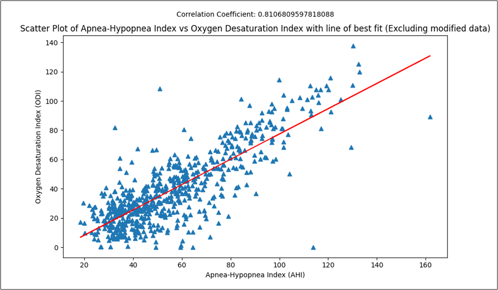
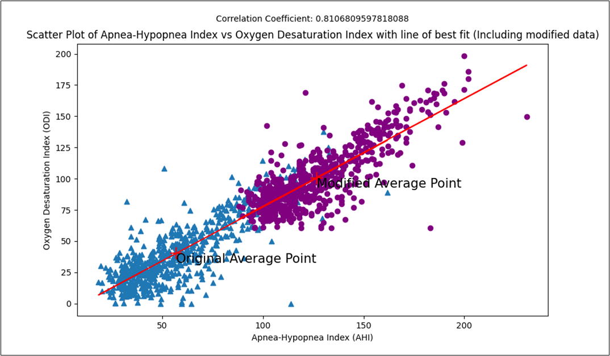
Accompanying console output:
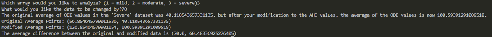
'What if' Question 2:
What
if the values under 'oxygen desaturation index' are changed by n? How might this
affect the Arousal Index?
Validated Parameters used:
1. Osaseveritypostqc. Sleep Apnea Severity descriptor (Enum)
2. Arousalindexcalc. Number of arousals per hour of sleep
(Float)
3. Desatindextot. Oxygen Desaturation Index (Float)
How
does this question pertain to wellbeing?
"Arousal
frequency is associated with increased fatigue"- National Library
for Medicine. As such, the Arousal index is linked to the theme of
wellbeing, as fatigue is a major factor in contributing to bad mental health.
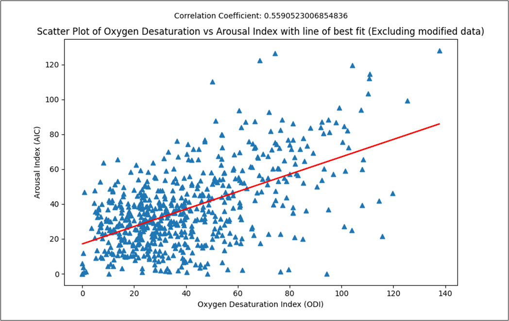
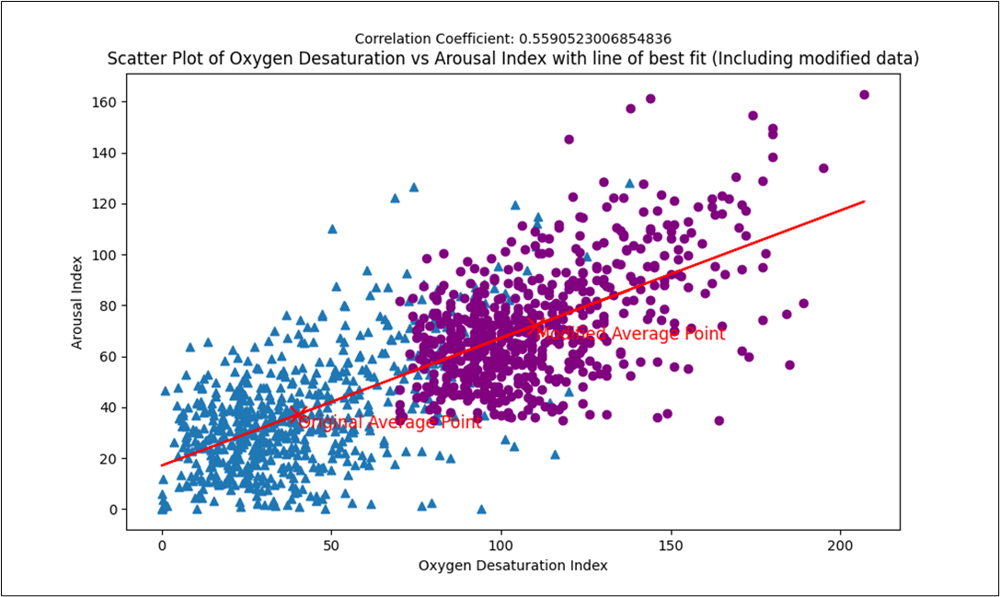
Accompanying Console output:
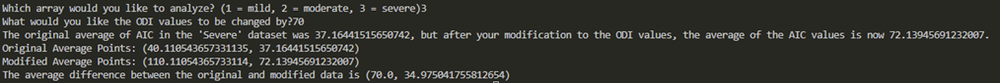
2.
2. Investigation
I started my investigation by researching the wide range of inventive and effective ways people have enhanced wellbeing with the use of technology and different embedded systems. The term "wellbeing" can be interpreted very broadly, and so in a sense any ways in which embedded systems are used to improve one's life can enhance their wellbeing. I came across many ways embedded systems were used to improve some aspect of life, such as in smartwatches, home appliances (Washing machines, refrigerators), medical devices (Pacemakers, Insulin pumps), Air Conditioning Systems, Smartphones etc. While not directly addressing the issue of wellbeing, having an intelligently designed washing machine or being able to instantly access information and communicate with friends using a smartphone can greatly improve quality of life, and in turn wellbeing.
Through
my research I came across this article
which states that "Getting enough
sleep, and the right type of sleep, is vital for our overall health and
wellbeing. A bad night's sleep can make it difficult to concentrate and leave
you lacking energy. Long term sleep deficiency can increase the risk of chronic
health problems such as heart disease and diabetes." This is very important in
the modern world, as there are so many distractions coming at us from all
angles, begging for our attention. I often feel awful the day after skipping a
few hours of sleep, and if my sleep schedule is interrupted my sense of
wellbeing can plummet.
I began investigating conditions which affect
sleep quality, such as epilepsy, narcolepsy, and sleep apnea. I have experience
with the latter, as my dad suffers from sleep apnea. I conducted an interview
with him to discover what can help individuals with this condition (questions
and answers linked here).
Some people's sleep apnoea is so severe that they stop breathing for 20-30 seconds at a time. This can cause their blood oxygen levels to drop dramatically, and untreated apnea can increase the risk of several diseases, including high blood pressure, heart disease, stroke, diabetes, and some headache syndromes. A health monitor would be greatly beneficial to improving the wellbeing of sleep apnea sufferers. I researched existing solutions to this problem, and I thought of ideas which could be modelled using an embedded system.
3.
3. Plan and Design
To fulfil the requirements set out in the brief, I considered many different ideas and approaches to increase the level of wellbeing in people with sleep apnea. After numerous preliminary iterations and evaluations as to how the general concept of the project would best fit the requirements and theme set out in the brief, the approach I found was most suitable and economically feasible involved acquiring an Arduino, a heartrate sensor, and an LCD display, so that I could design a system that could be used as a fully automated and functional health monitor. These components would allow me to create a reliable, easy to use system with an intelligent user interface. Along with displaying steady heartrate and blood oxygen readings, it will feature an analysis component that would calculate information, provide insights into the user's health and give suggestions, such as "monitor the situation" or "seek medical advice" if vitals were particularly severe. I believed this would be sufficient to fulfil the Basic Requirements as outlined in the brief.
However functional, this system will not be ergonomically suitable for use during the night. The device would need to be affixed to the user's hand/wrist and remain relatively stationary to read accurate results. This would not be feasible with my chosen design as breadboards are not designed for this purpose, and the system would act as more of a prototype/proof of concept.
For the fulfilment of the Advanced Requirements, I carefully considered my options. I found a dataset from a clinical study concerned with the examination of symptoms of sleep apnea sufferers. I began devising potential "What If" style questions from the many variables featured in the index, including things like a descriptor of the overall severity of apnea, Apnea-Hypopnea Index, BMI, Beck Depression Inventory and SPO2 saturation. These questions will provide the user invaluable insights into their condition, such as the impact the increase of severity in their symptoms would have on their overall mental or physical health. I will utilize various computational techniques such as heuristics, modular design and an intelligent user interface to create these questions. The results of these questions will be displayed in a suitable, easy to read visual format.
This project will require the use of various technologies, which can be seen below, along with use in my project:
Hardware:
·
Arduino
Uno R4 WiFi (Act as a micro controller)
· MAX30102 sensor (Read Heartbeat & SPO2 data)
· LCD1602 Display Keypad Shield (To Display Data)
· Breadboard(Easily connect components)
· Jumper Wires (Connect Components)
Software:
·
Arduino
IDE· (Write Arduino Code in C++)
·
VS Code·(Write all analytical code in Python)
·
Pandas, SciPy, Seaborn and
Matplotlib Python Libraries (to analyse data)
·
Smartdraw (Create flowcharts)
Arduino Flowchart (Left) and Python Flowchart (Right)
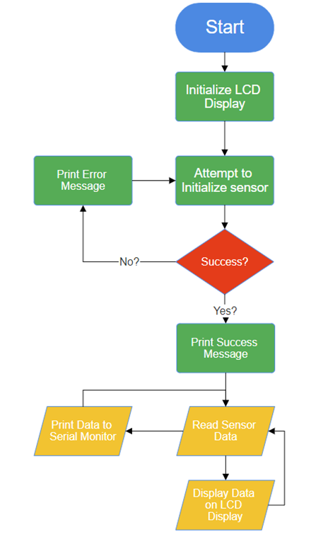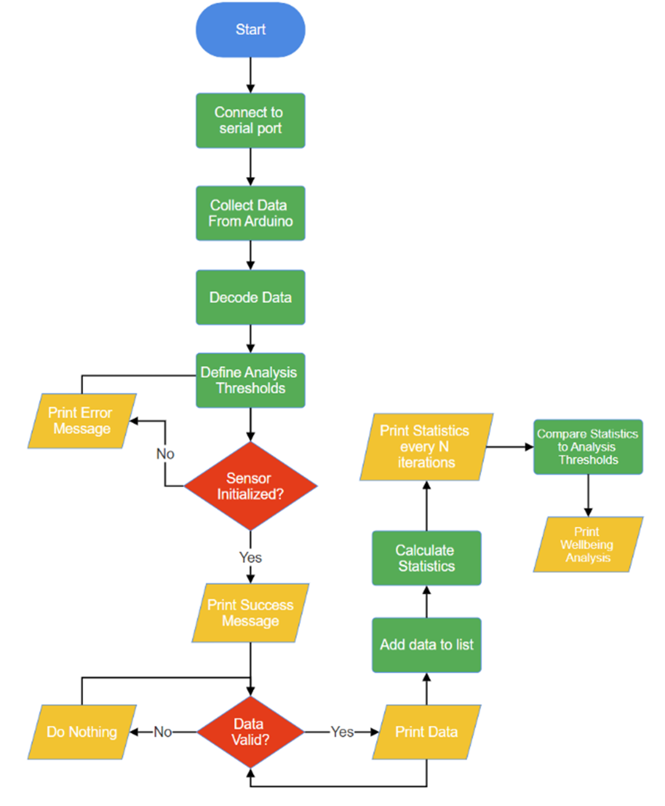
'What If' Flowchart
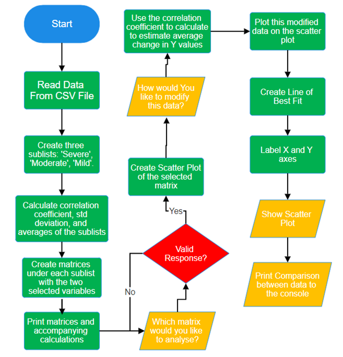
4.
4. Create
Week 1 (08/01):
· I read through the brief thoroughly. Decomposed it into manageable and easy sections and analysed each of the basic and advanced requirements, and the marking scheme.
· Looked through all the links accompanying the brief. These were helpful in brainstorming ideas.
Week 2 (15/01):
·
Began researching different uses of embedded systems, and all the ways in which
embedded systems are currently used to enhance wellbeing.
· Started writing investigation section of the report.
· Conducted an interview with my dad.
· The results of this interview prompted me to create a heartbeat and blood oxygen level monitor for individuals with sleep apnea.
· I ordered an Arduino from Digikey, along with a heartrate and oximeter sensor, breadboards, and jumper cables.
· Applied for data access to a database from a study on sleep apnea.
Week 3 (22/01):
· Began practicing with C++, as a refresher. I already had a previous general understanding of the language but had not used it for a while.
· My Arduino and components were delivered. I downloaded the Arduino IDE and Visual Studio Code.
· I am much more comfortable coding with Python, so I learned how to send all my data from the Arduino through the serial port, to be collected and analysed by Python.
· Practiced with writing basic code and passing it back and forth between both platforms and languages.
· The data transferred through serial ports came with a prefix and a suffix, (e.g. "Hello World" would be displayed as "b'Hello World\r\n" in the VSCode terminal). The 'b' means it is a way of representing a series of bytes as a string, and the '\r\n' signifies a carriage return and newline. This was a major issue as I needed clean data when conducting analysis.
· I wrote code to decode this information so I could work with clean data when I began receiving sensor inputs. This can be seen bellow:
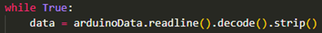
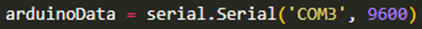
Week 4 (29/01):
· I familiarised myself with the pin connections and the wiring necessary to power the heartrate sensor.
· I learned how to solder, and successfully set up the component.
· The LCD display is an Arduino shield, so I didn't need to worry about wiring, as it plugs straight into the Arduino. However, I when I gave the board power, the display lit up, but it wasn't displaying anything. This was a major error as I needed it to function for the UI. After some research, I discovered that it came with a potentiometer, and I needed turn it 20 rotations to the right with a screwdriver, as the contrast was at 0.
· I found some preexisting solutions in the sensor and LCD libraries and incorporated them into my code. This this includes defining communication protocols and the array for the heart symbol on the LCD.
· I wrote python code to validate the data, and disregard any 0 values or high outliers. I conducted a unit test with a set of both valid and invalid results, to check it returned the expected results.
· I took a modular approach to my code. This consists of two main modules: The control module in C++ and the analysis module in Python. These both consist of sub modules (e.g. the validation, display, and analysis modules in Python). These all work together to form a cohesive whole.
· This Python code is a function to check if there is data for analysis, then calculate average heart rate and blood oxygen level, define thresholds then analyse the data and provide suggestions to improve wellbeing. It is annotated for additional clarity.
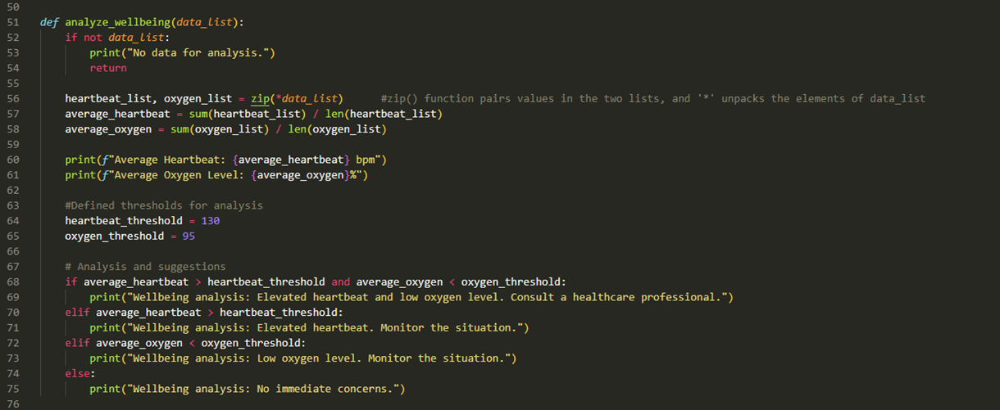
Week 5 (05/02):
· Was approved for access to the database.
· Started work on the Advanced Requirements. Started preprocessing procedures including cleaning the database from whitespaces or invalid data.
· Researched how to analyse large databases with various Python libraries. Researched several types of graphs and the types of data each are suited to represent.
· Identified variables from the database that were most relevant to the project objectives of improving wellbeing.
· Devised multiple potential 'What If' questions.
· Wrote code to read and manipulate data from the database. I realised that I would need to find the correlation coefficient between variables, to show what change would happen to variable 'x' if variable 'y' is changed.
· I began researching how to effectively draw insights into the data and I became familiar with using libraries like 'SciPy', 'NumPy', and 'Pandas'.
Week 6 (19/02)
· I experimented with other automated solutions like 'three variable regression models', but I couldn't fully understand the concept, or how to apply it with my specific requirements. After numerous iterations and evaluations, I realised that I could still incorporate 3 validated parameters if I separated the data into three sub-matrices based on three different 'enumerated' type values, then fit a linear regression model and plotted these matrices on a scatter plot using 'matplotlib'.
·
Wrote the code for my 'What If'
questions. Data is displayed in a numerical format (printed to the console),
and a visual format (scatter plot). It uses this formula to calculate the
change in average Y values:
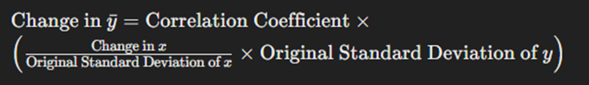
· Conducted a unit test where I compared the programmatically calculated correlation coefficient of the different variables to the authenticated figures provided by the database.
· Conducted an evaluation of the overall project.
· Created the 'Meeting the Brief' video.
5.
5. Evaluation
I
believe that my project has met fully met all requirements set out in the
brief. I have built a fully automated embedded system, with multiple analogue/digital
inputs and outputs. I wrote code to effectively validate and store
the data gathered from my system, and created code to give advice to inform
future decisions relating to wellbeing.
With regards to the Advanced Requirements, I have devised two insightful "What If" style questions which can give people with sleep apnea some insights into their condition. These what if questions each use three validated parameters and use both enumerated and float data types. The outputs to these questions can be viewed in appropriate visual formats, labelled clearly for ease of analysis. However, there are drawbacks to my chosen approach. My computer model assumes a direct linear correlation between the two variables that are analysed. The relationship between the variables is obviously not directly linear, because if it was the graph would form a straight line. I took a heuristic approach to solve the problem, but in improved future iterations of this code I could fit a more intuitive and accurate model for predicting change in variables, such as a machine learning algorithm or a local regression model. I could also try to incorporate more variables to better understand the correlation between variables.
My physical system met the needs of the end users in the sense that it provided reliable monitoring of health symptoms and insightful advice into their condition. On the other hand, functionality is another issue, and my project unfortunately did not quite meet the need of functioning as a sleep monitor. I didn't have enough resources or expertise to design a system like this, and my chosen design requires the user to manually place their finger on the sensor and hold it there for an accurate reading. To improve this design I would forgo the use of breadboards and design an ergonomic and aesthetic chassis to house my sensor, along with a method for affixing the device to the user's hand or wrist.
The potential societal impact of automation with regards to the theme of wellbeing remains yet to be seen. Overall, I believe that it is a net positive, as there are so many benefits to having things such as an automated health monitor, household appliance, or assembly lines. However, there are also numerous wellbeing downsides when it comes to automation. It can increase the level of job insecurity, which can have profound effects of workers' mental health.
Overall, I was successful in achieving my goals, and I thoroughly enjoyed working on an issue of wellbeing which I experience in my everyday life. This project gave me invaluable insights into my father's condition, and I learned how something as simple as a heartbeat and oximeter can help with treating sleep apnea and the improvement of wellbeing.
6.
6. References
|
Section |
Word Count |
|
1. Meeting
The Brief |
399 |
|
2. Investigation |
371 |
|
3. Plan and
Design |
441 |
|
4. Create |
868 |
|
5. Evaluation |
477 |
|
Total: |
2556 |
7.